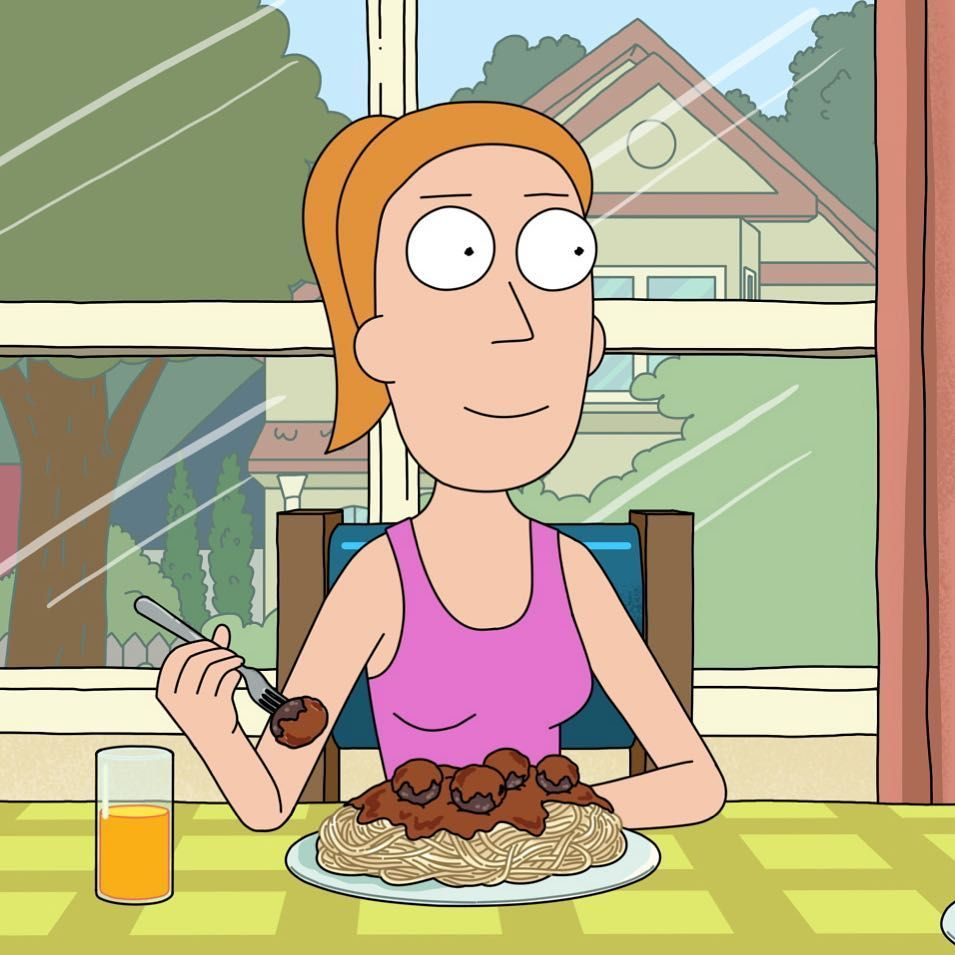

Morty Smith
Es uno de los personajes
de la
serie animada Rick y Morty.
Es un nervioso adolescente
basado en Marty McFly de Regreso al Futuro.
Perfil de Morty
Rick Sanchez
Es un mega-genio de la serie Rick y Morty.
Su historia de fondo explica gran parte de su
comportamiento mientras progresa la serie.
Perfil de Rick
Summer Smith
Summer Smith es la hija mayor
de Jerry y Beth.
Es la única en enterarse de
que el Morty y el Rick vienen de otra dimensión
alterna.
Perfil de Summer
Jerry Smith

Es capaz de heroísmo en
tiempos de crisis
Actualmente se desconoce si la Beth con la que
se volvió a casar es un clon o la Beth original.
Perfil de Jerry
Beth Smith
Esposa de Jerry Smith.
Es la hija de Rick pero técnicamente es
la hija de un Rick muerto
en un
accidente.
Perfil de Beth